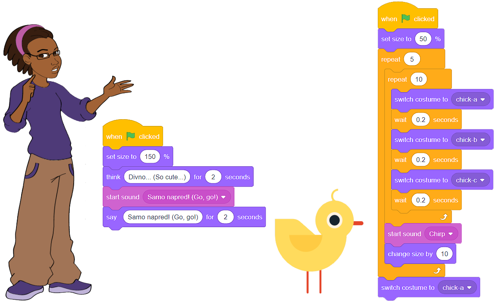

Звук¶
Способността да добавяме звукови ефекти към нашите спрайтове в допълнение към балончета с мисли или с текст в тях дава възможността да създаваме по-динамични и интересни програми.
Скрач има богата библиотека от звуци, както и възможността да запишем собствения си глас или да свалим гласови записи от нашия компютър в .wav или .mp3 формат. Блоковете, които ни позволяват да чуваме звуци, се намират в категорията Звук.
Спрайт звуци¶
Ще подобрим програмата Ферма, която може да бъде намерена на линка https://scratch.mit.edu/projects/326422653/, така че момичето Ейвъри наистина да може да казва „Давай, давай!” и пилето да чурулика след добро похапване.
Първата стъпка е записването на звука – нашия глас: ще направим записа и ще го добавим към текста, принадлежащ на момичето; на записа трябва да казваме: „Давай, давай!”
Записване на звука
Преди записването на звука ние трябва:
Да се уверим, че момичето спрайт е активно (квадратчето на спрайта трябва да има синя рамка около него в списъка със спрайтовете);
Да кликнем на менюто звук;
Да изберем опцията запис.

Прозорецът Записване на звук ще се отвори; в този прозорец можем да започнем да записваме звука.
Натисни червения бутон и кажи: „Давай, давай!”;
Можеш да чуеш записа, като натиснеш бутона Play. Ако си доволен, трябва да натиснеш бутона Save, ако не си, натисни бутона Re-record и го направи отново;
Визуално представяне на записа ще се появи в менюто Звук;
Блоковете, които позволяват на гласа ни да се чува по време на действието на програмата, ще се появят в категорията Звук.

Чуруликащият звук на пилето може да се намери в звуковата библиотека и да се качи от нея.
Не трябва да забравяме, че пилето спрайт трябва да е активно; в противен случай, чуруликащият звук ще се добави към момичето спрайт.

Готови сме да добавим командни блокове към кода.
{kind=link}
 Миксирай отново проекта Ферма, който може да бъде намерен на линка https://scratch.mit.edu/projects/326422653/. Запиши звука и добави правилния блок към текста, който принадлежи на спрайта момиче. От звуковата библиотека добави уместното чуруликане към текста, който принадлежи на спрайта пиле.
Миксирай отново проекта Ферма, който може да бъде намерен на линка https://scratch.mit.edu/projects/326422653/. Запиши звука и добави правилния блок към текста, който принадлежи на спрайта момиче. От звуковата библиотека добави уместното чуруликане към текста, който принадлежи на спрайта пиле.
- Ако бяхме избрали другия блок, първо щяхме да чуем гласа си. Текстовият балон щеше да се появи едва след изречението на изречението.
- Браво!
- Можехме да използваме втория блок и програмата щеше да работи по същия начин.
- Това не е правилно. В програмата * Farm * заменете блока, представен на фигурата по-горе, стартирайте програмата и анализирайте резултата.
Q-11: В програмата Ферма избираме блока за добавяне на звук, а не блока  . Защо?
. Защо?
Композиране на музика¶
Композирането на музика изисква добавянето на нова категория блокове към Скрач интерфейса. Това се постига с кликването на бутона  , който се намира в долния ляв ъгъл на екрана, и след това с избирането на продължение Music.
, който се намира в долния ляв ъгъл на екрана, и след това с избирането на продължение Music.

Независимо от езика, който говорят, хората от целия свят знаят песничката Frere Jacques. Ако не знаеш песента, провери я в Ютуб и ние ще ти помогнем да я композираш в Скрач.
За инструмент ще изберем електрическо пиано и ще свържем нотите така, че когато задействаме програмата, тази известна песен ще започне да свири.

Миксирай проекта Frere Jacques, който може да бъде намерен на линка https://scratch.mit.edu/projects/326431999/ и добави блоковете, които ще допринесат за пълнотата на звука (барабани или секцията за ритъм). Използвай инструментите от падащото меню на блока  . Използвайки подходящия блок от категорията Звук, увеличи силата на звука на всеки ред с 10.
. Използвайки подходящия блок от категорията Звук, увеличи силата на звука на всеки ред с 10.
 Опитай се да изпееш песента Frere Jacques без музика и го запиши. Добави записа към Скрач програмата Frere Jacques. Сигурни сме, че ще се получи интересен аранжимент!
Опитай се да изпееш песента Frere Jacques без музика и го запиши. Добави записа към Скрач програмата Frere Jacques. Сигурни сме, че ще се получи интересен аранжимент!